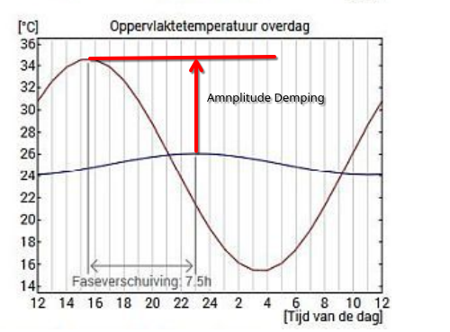

en de amplitude demping 0.2 bedraagt,
dan wordt dat vertaald in een stijging van de binnentemperatuur van slechts 3 graden

Dit is een van de kern argumenten waarmee biobased aanhangers schermen als ze de voordelen van biobased isolatie uitdragen. Zij noemen het fase-verschuiving, wat ik nog niemand goed heb zien uitleggen. Bovendien wordt het dan gekoppeld aan nachtventilatie, die in Nederland maar beperkt mogelijk is.
Temperatuurdemping is een andere presentatie van exact het zelfde fenomeen, maar is wel duidelijk verklaarbaar en werkt ook zonder nachtventilatie.
Als overdag in de zomer, de buitentemperatuur in de loop van de dag stijgt van 20 graden naar 35 graden, dus een toename van 15 graden,
en de amplitude demping 0.2 bedraagt,
dan wordt dat vertaald in een stijging van de binnentemperatuur van slechts 3 graden
Indien mogelijk raad ik bij voorkeur biobased isolatiemateriaal aan, maar de eerlijkheid gebied mij te zeggen dat sommige prestaties van biobased materialen wat achter blijven. Overleg ook eens met uw energiecoach.
| Materiaal 16 cm dik | Isolatie-waarde zo hoog mogelijk |
Temperatuur-Demping zo laag mogelijk |
Milieu Kosten Indicator MKI |
|---|---|---|---|
| Inblaas Houtwol (een van de beste biobased) |
4.1 | 0.26 | 0.53 |
| PIR (een van de beste niet-biobased) |
7.0 | 0.27 | 8.00 |
| Vlas (meest gangbare biobased) |
4.0 | 0.30 | 0.20 |
| Steenwol (meest gangbare niet-biobased) |
4.6 | 0.35 | 1.00 |
We zien in de tabel de volgende opvallende feiten
Deze factor is met name in de zomer (en alleen voor het dak) van belang en geeft aan hoeveel warmte wordt tegengehouden. In onderstaande figuur zie je dat buitentemperatuur binnen 24 uur, varieert van 15 naar 35 graden Celsius. De binnentemperatuur varieert bij deze isolatie slechts 2 graden.
Dat betekent dat de temperatuur-amplitude-demping 0.2 bedraagt.
Bij een grote demping kun je het dus in de zomer dagen en soms zelfs weken comfortabel houden op een zolder.
Als we dit dus een belangrijke parameter vinden, zien we in de keuzelijst dat we het beste kunnen kiezen voor houtwol.
Wel moeten we er voor zorgen dat de warmte niet op een andere wijze (bijvoorbeeld een open raam) in de ruimte terecht komt.
Ook is het interessant om te beseffen dat een groendak een hele grote amplitude demping heeft (maar geen hoge isolatiewaarde).

Als je over een aantal dagen kijkt, stijgt de binnentemperatuur langzaam.
En bij zogenaamde tropische nachten, helpt nachtventilatie ook niet.
Helaas zijn hierover nauwelijks plaatjes te vinden.

Hoewel dit plaatje over glas gaat, laat het wel de juiste curve zien.

De naam amplitude demping en het bijbehorende getal alfa kloppen nog niet.
Amplitude demping is eigenlijk ( 1 - alfa )
Moet ik nog eens iets anders voor verzinnen.